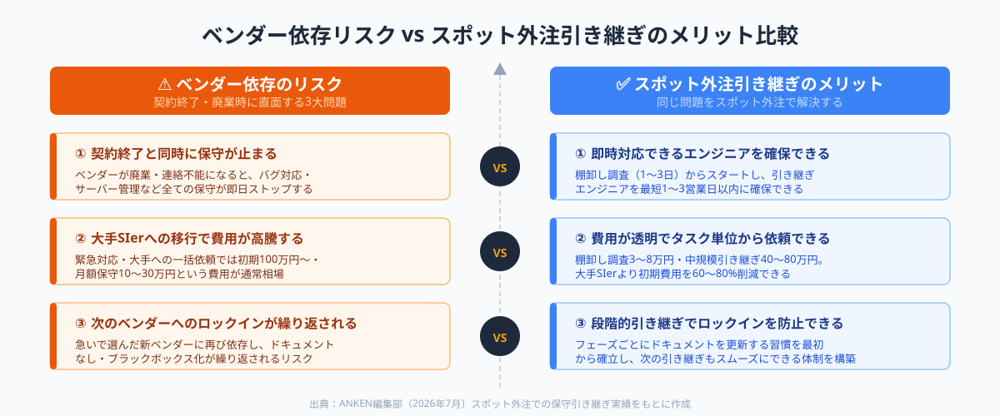
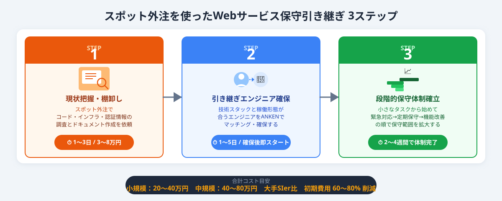

なぜベンダー離脱後のWebサービス保守引き継ぎは難しいのか
既存のシステム開発・運用ベンダーが廃業・契約終了・連絡不能になった際に、新たな担当者にシステムの保守・運用・改修を引き継ぐ作業のこと。ソースコードの移管だけでなく、インフラ設定・外部API連携・デプロイ手順・バグ対応フローまで幅広い知識の引き継ぎが必要になる。
多くの中小企業がWebサービスやSaaSプラットフォームの保守をベンダーに丸投げしてきた結果、「ベンダーが離脱した瞬間に保守できる人が社内にいない」という状況が頻発しています。特に以下のようなケースでは難易度が一段と上がります。
- ドキュメントがない、またはベンダー側に保管されている：インフラ構成・デプロイ手順・APIキーの保管場所が一切わからない状態になりやすい
- 独自フレームワーク・レガシー言語を使っている：Rails 5系・VB6・PHP 5系など扱えるエンジニアが少ない技術スタックで構築されたシステムは引き継ぎ先が見つかりにくい
- ベンダーが廃業・連絡不能になった：契約終了の猶予期間なしに引き継ぎが始まるケースでは、コードリーディングからすべてを自力で始める必要がある
- サービスが稼働中のため止められない：本番環境が動いている状態でコードを触ることになるため、影響範囲の特定が不可欠
これらの障壁は「スポット外注でベテランエンジニアに短期集中で調査・引き継ぎを依頼する」アプローチで解消できます。大手SIerへのフルリプレイスは時間もコストもかかりすぎる場面で、スポット外注は現実的かつ低リスクな選択肢です。

スポット外注を使った保守引き継ぎ3ステップ
ステップ1｜既存システムの現状把握と棚卸しをスポット外注で実施する
最初にやるべきことは「自社がどんなシステムを動かしているか」の全体像を把握することです。保守を引き継ぐ前の棚卸しが不十分だと、新しいエンジニアが何から手をつけていいかわからず引き継ぎが長期化します。
棚卸しで確認すべき5項目
- ソースコード：GitHubやGitLabのリポジトリURL、最終コミット日、ブランチ構成
- インフラ構成：利用サーバー（AWS・GCP・さくらVPS等）、DBの種類・バージョン、利用している外部API（決済・メール・地図等）
- 認証情報・シークレット：APIキー・サーバーアクセス情報の保管場所（1Password等のパスワードマネージャーに集約できているか）
- デプロイ手順：本番環境への反映方法（CI/CD有無・手動手順書の有無）
- 依存ライブラリ：package.json・Gemfile・requirements.txtのバージョン固定状況、EOLになっているライブラリの有無
この棚卸し調査自体をスポット外注で依頼できます。「現行システムの構成調査と引き継ぎ用ドキュメント作成」として1〜3日のタスク単位で発注し、調査結果を納品物として受け取ることで、次の引き継ぎエンジニアの選定精度が大幅に上がります。
① リポジトリへの読み取りアクセス権を一時的に付与する
② 「何がわかっていて何がわかっていないか」を正直に伝える
③ 成果物は「引き継ぎ先エンジニアが読んですぐ動ける構成メモ」と定義する
④ 機密性の高い認証情報は共有前に整理・変更を検討する
ステップ2｜スポット外注で引き継ぎエンジニアを確保する
棚卸しリストが揃ったら、「このシステムを継続保守できるエンジニア」を探します。スポット外注での保守引き継ぎは、フルタイム採用や大手SIerへの一括依頼とは異なり、「まず1週間・1タスクだけ試してから継続するかを判断できる」点が最大のメリットです。
引き継ぎエンジニアの選定で見るべきポイント
- 技術スタックが一致しているか：Rails・Django・Laravelなど言語・フレームワークの実務経験を確認する。レガシー技術の場合は「保守経験あり」が必須
- 既存コードを読む経験があるか：新規開発とレガシー保守は異なるスキルセット。「他社の既存コードに入った経験」を確認しておく
- 稼働形態が合うか：障害時の緊急対応が必要な場合は、週何日・何時間稼働できるかを事前に確認する
- ドキュメント作成を依頼できるか：保守を続ける中で引き継ぎドキュメントを随時更新してもらえるかを確認する

ステップ3｜段階的引き継ぎで保守体制を確立する
引き継ぎエンジニアが確保できたら、一気に全部を任せるのではなく「小さなタスクから始めて、システムへの理解度と信頼関係を積み上げる」段階的アプローチが失敗リスクを最小化します。
段階的引き継ぎのフェーズ例
-
Phase 1（1〜2週間）：コードリーディング・環境構築
ローカル開発環境を立ち上げ、既存コードを読んで全体像を把握する。この段階では本番には触れない。棚卸しドキュメントをもとに不明点をリストアップしてもらう。 -
Phase 2（1〜2週間）：軽微な修正・バグ対応
テスト環境で小さなバグ修正・テキスト変更から始める。デプロイ手順を体験してもらい、本番反映のフローを習得する。 -
Phase 3（以降継続）：定期保守・機能改善
月次のバージョンアップ対応・セキュリティパッチ適用・小規模な機能追加を担当してもらう。スポット単位での継続依頼体制が確立できたら安定フェーズに入る。
この段階的なアプローチにより、「引き継いだエンジニアが実は対応できなかった」という最悪のシナリオを早期に発見・対処できます。また、保守担当エンジニアが変わった際にも次の引き継ぎがスムーズになるよう、フェーズごとに引き継ぎドキュメントを更新していく習慣を最初から確立するのが長期的なリスク管理の要点です。
費用・期間の目安（2026年）
スポット外注での保守引き継ぎにかかる費用と期間は、システムの規模・技術スタックの希少性・ドキュメントの有無によって大きく変わります。以下は2026年のANKENでの実績をもとにした目安です。
① 棚卸し調査のみ：1〜3日、費用 3〜8万円
ソースコード・インフラ構成の調査と引き継ぎドキュメント作成
② 棚卸し＋引き継ぎ（小規模・シンプルなシステム）：2〜3週間、費用 20〜40万円
静的サイト・LP・シンプルなWebアプリ
③ 棚卸し＋引き継ぎ（中規模・複数機能のWebサービス）：3〜6週間、費用 40〜80万円
EC機能・会員管理・外部API連携を含むWebサービス
④ レガシー・複雑な依存関係がある場合：1〜3ヶ月、費用 80〜200万円
VB6・PHP 5系等のレガシー言語、大量の外部連携があるシステム
「レガシー技術」「ドキュメントなし」「緊急対応あり」の3条件が重なると費用は目安の2〜3倍になる可能性があります。事前の棚卸し調査（3〜8万円）でこれらを把握してから本格的な引き継ぎを発注するのが、費用超過を防ぐ最善策です。
大手SIerへのリプレイスや保守契約では初期費用100万円〜・月額保守費用10〜30万円が相場です。スポット外注での引き継ぎはこれと比べ初期費用を60〜80%削減できるため、「当面の保守体制を確立した上で、将来的にリプレイスを検討する」という段階的な計画が取りやすくなります。
ANKENで引き継ぎエンジニアを探す流れ
ANKENはAI開発・システム開発のスポット外注に特化したマッチングサービスで、「既存システムの保守引き継ぎ」を専門的に対応できるエンジニアも多数登録しています。
- 無料相談（30分〜）：現状のシステム概要・使用技術・緊急度をヒアリング。要件が固まっていない状態でも相談できます
- エンジニアのマッチング：ヒアリング内容をもとに対応できるエンジニアを選定。通常1〜3営業日以内に候補をご提案します
- 棚卸し調査からスタート：まず1〜3日の調査タスクからスタートし、費用・工数の見立てを取ってから本格引き継ぎへ移行します
- 段階的な継続依頼：引き継ぎ完了後も月次保守・緊急対応をスポット単位で継続依頼できます
「技術的な詳細が自社ではわからない状態から依頼する」ケースが最も多いです。「何の言語で作られているかもわからない」という状態でも、ヒアリングを通じて状況を整理しながらマッチングを進められます。まずは相談ベースでお気軽にご連絡ください。
よくある質問
- Q. 既存ベンダーが連絡不能・廃業した場合、ソースコードだけあれば保守を引き継げますか？
- A. 引き継ぎは可能ですが、インフラ情報・認証情報・デプロイ手順が不明な場合は調査に1〜2週間追加でかかります。まずスポット外注で「現状把握調査」だけを依頼するのが最善です。
- Q. スポット外注での保守引き継ぎ費用はどのくらいですか？
- A. 棚卸し調査のみで3〜8万円、中規模Webサービスの全体引き継ぎで40〜80万円が目安です。大手SIerへの依頼より初期費用を60〜80%削減できます。
- Q. 引き継ぎエンジニアを探す際に何を確認すればよいですか？
- A. 言語・フレームワークの一致、他社コードの保守経験の有無、稼働可能な時間帯・緊急対応の可否を確認します。ANKENへの依頼時はヒアリング時にまとめてお伝えください。
まとめ
既存ベンダーの廃業・契約終了によるWebサービス保守の問題は、スポット外注の3ステップで解決できます。①現状把握の棚卸し調査をスポットで依頼→②引き継ぎエンジニアを技術スタックと稼働形態で選定→③小さなタスクから段階的に保守体制を確立する、この順序を守ることで移管リスクを最小化できます。
「全部を一気に解決しようとしない」「まず棚卸し調査だけをスポットで依頼してから次を考える」という段階的なアプローチが、最速かつ低コストで保守体制を立て直すコツです。現状が見えていない段階でも、ANKENへの無料相談から始めることで状況を整理しながら次のステップを組み立てられます。